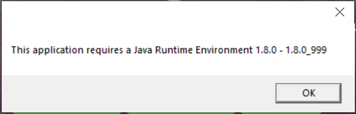
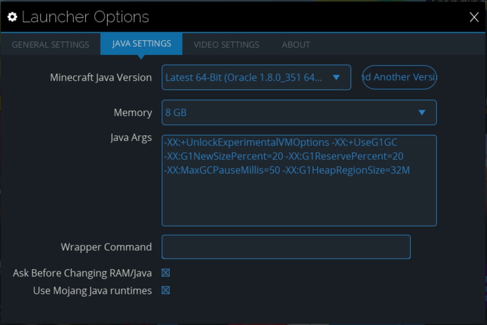

If You dont already have technic tauncher then you need to install it click here to go to install page.
Click get the launcher, select your operating system, then run the installer.

If you do not have the correct jave version installed you will get this error. clicking ok will redirect you to a java download page when it dose press download java and run the installation. after you install java reopen the technic installer and go through the installation.

After you go through the installation you will be prompted to add either a microsoft account or a minecraft account one you add one you should be redirected to technics homepage.

Go to launcher options then java settings and change your memory to half your systems ram if that is more than 16 gb use 16gb but 8gb is recomended.